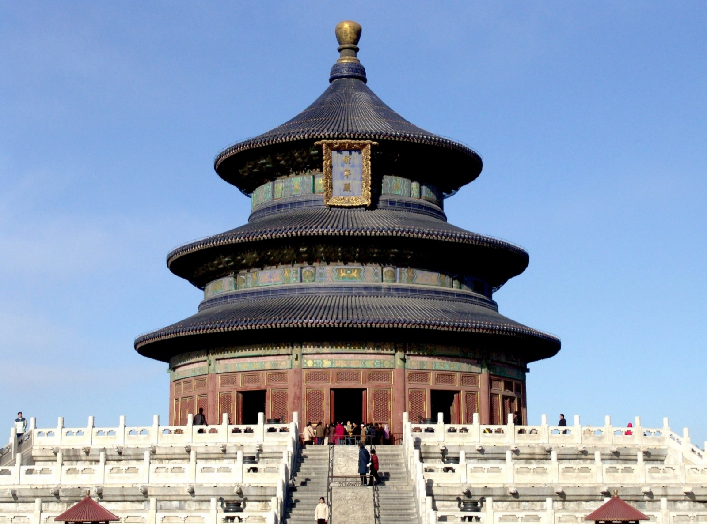

01
08:30–09:15
아침 식사
식사
천단공원 관람 전 숙소 주변에서 식사합니다.

기년전과 다스란. 학교 승인 시 오후 북경대 방문.
천단공원 관람 전 숙소 주변에서 식사합니다.
5호선 톈탄둥먼역 A출구를 이용할 수 있습니다.
기년전 중심으로 보고 여유가 있으면 회음벽이나 원구단을 추가합니다.
전문대가 주변에서 식사와 실내 휴식을 겸합니다.
전통 상점과 먹거리 골목을 둘러봅니다.
야외 일정을 마치고 따뜻한 곳에서 쉽니다.
쇼핑·저녁이면 싼리툰, 야경 산책이면 올림픽공원 한 곳을 선택합니다.
학교 입장 승인 시
10:00~11:50 천단공원, 11:50~14:00 점심과 하이뎬 이동, 14:00~15:30 북경대 캠퍼스가 예시입니다. 첸먼·다스란은 이 동선에서 제외하고, 입장 시각은 학교 회신을 따릅니다.
아래 시장과 원래 첸먼·다스란 일정을 이용하세요.
외국인 방문 문의와 지도12월 16일 · 11:50–12:30 예시
천단공원 동쪽 맞은편 시장입니다. 천단 관람 후 동문 쪽으로 나오는 경우에 들러 진주, 공예품과 베이징 중축선 기념품을 둘러보고 첸먼으로 이동합니다. 시장에 들르면 첸먼 점심을 늦추고, 천단에서 다른 문으로 나왔다면 이동 시간을 고려해 선택하세요.
베이징시 시장 안내 · 시장 지도 · 중축선 기념품점별도 일정 후보
비행기에 관심이 있다면 차오양구의 민항박물관에서 실제 민항기 전시를 볼 수 있습니다. 수도공항 보조도로 200번지에 있으며, 비행기 모형 판매와 재고는 확인되지 않았습니다. 방문 전 개관과 이동 시간을 확인하세요.
베이징시 문물국 안내07:00–22:00 · 베이징 현지 시각. 점선은 예시 시간이며 항공편·투어 예약에 맞춰 조정합니다. 빈칸은 일정 여유입니다.